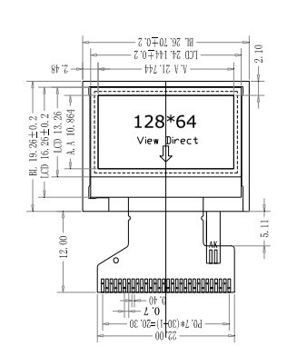
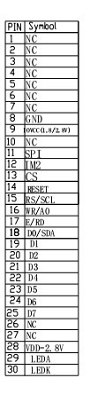
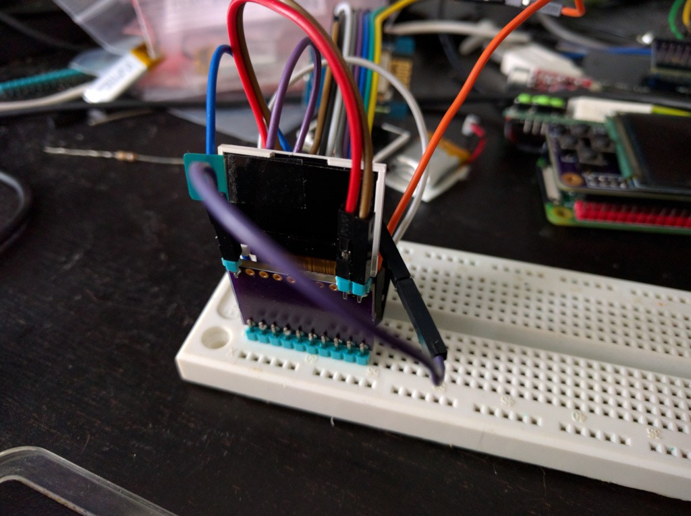

Displays Are Hard¶
Published on 2017-08-10 in PewPew FeatherWing.
Yesterday the breakout board I made for those tiny displays arrived, so today I soldered one and tried to get it to work. So far unsuccessfully, but we will see what the future brings.
The datasheet at the seller’s Aliexpress page only has this image as the information:
And then this table:
The product page has ST7735S in the title, so I’m working under the assumption that it is indeed a ST7735-series chip. Assuming that, and looking at the datasheet, I’m guessing the following pins:
| Image | Datasheet |
|---|---|
| GND | GND |
| IOVCC (1.8/2.8V) | VDDI\ |
| SPI | SPI4W |
| IM2 | IM2 |
| CS | CSX |
| RESET | RESX |
| RS/SCL | D/CX (SCL) |
| WR/A0 | WRX (D/CX) |
| E/RD | RDX |
| D0/SDA | D0 (SDA) |
| D1-7 | D1-7 |
| VDD-2.8V | VDD |
| LEDA | Backlight LED Anode |
| LEDK | Backlight LED Cathode |
Then I tried wiring it for the 4-wire SPI mode, since that’s what I already have the drivers for. I connected VDD, VDDI, LEDA, and SPI to power, GND, LEDK and IM2 to ground, and all the SPI pins, and tried the driver. Nothing, white screen. Tried a second display just to be sure. Same. Hmmm…
(By the way, when you are making a breakout like this, and make it exactly the size of the display, like I did, then make sure that: 1. the pins are a multiple of 2.54mm apart, so that you can insert it into the breadboard, and 2. you put the pin markings on the side that is not covered by the display.)